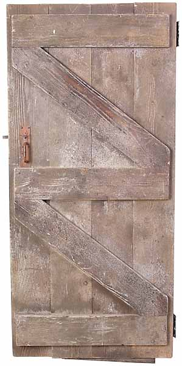
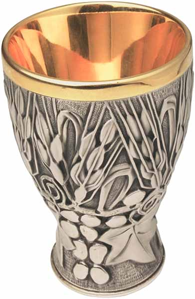
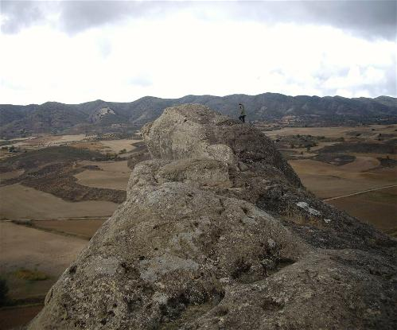
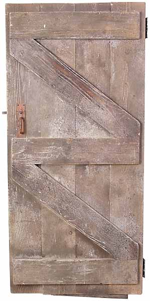
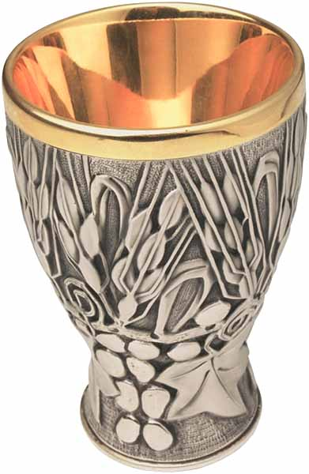
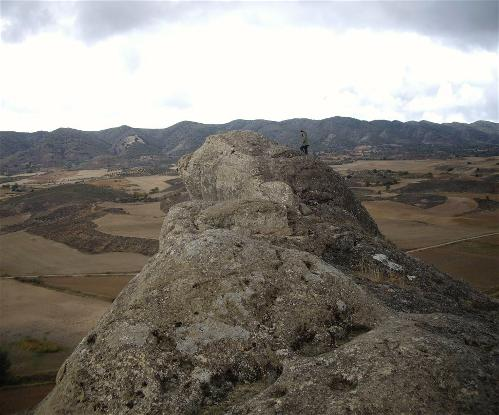

¿Quiénes somos realmente?
Buscadores
¿Qué buscamos?
Una puerta

¿Dónde está esa puerta?
En la piedra

¿Cuál es esa piedra?
El Grial

¿Cómo llegar al Grial?
Siguiendo las huellas de la Luz

¿Quiénes somos realmente?Buscadores¿Qué buscamos?Una puerta ¿Dónde está esa puerta?En la piedra¿Cuál es esa piedra?El Grial ¿Cómo llegar al Grial?Siguiendo las huellas de la Luz |